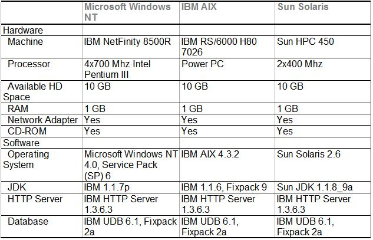

| Guideline: WebSphere Application Server Sizing |
 |
|
1 StepsThe following sections address the considerations when sizing a box for WebSphere Application Server 3.5.
1.1 Starting Point – Base Requirements There are no easy answers to capacity planning questions. The list below serves as a starting point for sizing issues. These are the hardware requirements for installing WebSphere Application Server on any supported platform. Other supported software (for example, your database program) may have additional requirements.
The requirements given above are basically what come printed on the WebSphere box. In practice, these requirements have been proven inadequate. For decent performance, there is a recommended base requirement to host WAS of 1024MB, not 512MB and especially not 256MB. In addition, WAS uses DB2, which has a base requirement of 512 MB. This is a total base requirement of 1536 MB of memory. 1.2 Best Approach to Sizing WAS The significant factor in determining system requirements for WebSphere Application Server is processor performance and RAM. WAS specifies a minimum of 512 MB RAM, however, 1024MB or 1536MB if using DB2, have been determined to be more appropriate for good performance. Disk capacity requirements depend on the Web content developed for the solution, the WebSphere Application Server itself requires around 40 MB of space. WebSphere is but one component of many in a production environment. The client, the communications network, the web server, the application server, the database server, and the Java Virtual Machine (JVM) all play a role in performance. When determining your hardware needs there are several things to consider in addition to the requirements listed above. The most important of these issues are:
As a practitioner you will need to know how the infrastructure will be set up. In order to size a box you must know what workloads it will be expected to handle. How many application servers will run on this box? Will the web server run on the same box as the App Server? Where will the database server run? What are the disk requirements of the application itself? One cannot begin to properly size WAS until all the questions are answered. Now comes the tricky part: performance. How will this machine be expected to run? How many hits will it receive and how will it grow in the future? Simply put, the faster the processor and the larger the memory the better the performance. If the minimum requirements are all that are met, this practitioner has left no room for vertical scaling (the addition of clones). Adding clones will increase performance only if the machine is not running at 100% capacity. If this box is sized to have the resources necessary to support additional application servers (clones), performance can be increased both vertically and horizontally. In summary when sizing for WebSphere, the practitioner should consider the following:
1.3 Example WebSphere Solution Sizing Requirements Below is a table of the suggested configuration requirmements for a successful WebSphere v3.5 solution on a variety of platforms. These configurations will provide adequate performance for a midrange workload. Note that WebSphere best scales linearly, and to improve performance of a system, it is suggested to simply add more machines rather than increase the number of processors or size of RAM. There have been tests where there are diminishing returns once the processors increase above four. It is not reccomended that you use these suggestions as a substitute for the tools listed within this paper.  The configurations given above are a good starting point for medium sized development efforts. Optimal configuration information will be largely influenced by the many components of the individual environment, and will only be determined after several development efforts are underway. 1.4 Sizing Tools Some hardware platforms offer sizing tools to make the sizing process easier. These platforms and there tools are discussed in detail below. NT, AIX, and Solaris Platforms Perhaps the most useful tool, this site provides an estimate as to what type of processor, number of CPUs, and/or number of machines necessary to achieve a throughput of your selection. You will enter the workload and the expected TPS (transactions per second), and the tool will return to you suggestions and response times. AS/400 (OS/400) Sizing AS/400 has been made simple thanks to the convenient IBM Workload Estimator. The IBM Workload Estimator is an easy to use sizing tool that can be run on-line or be downloaded to your PC for mobile use. It is an invaluable tool that takes into account how many hits per hour are expected, number of static HTML pages being served, JSPs, servlets, EJBs and so forth. It takes everything into account needed to decide on the appropriate hardware. The estimator has been enhanced to include the ability for multiple existing systems to be present in an estimation. This will aid you in considering consolidating multiple AS/400 systems into one new iSeries 400. One of the new tutorials, "Consolidating Existing Systems", deals with this feature. The tool is currently capable of sizing Domino, Java, WebSphere, WebSphere CommerceSuite, and traditional workloads, either separately or in combination. The IBM Workload Estimator can be located at: http://as400service.ibm.com/servlet/EstimatorServlet RS/6000 (UNIX and Linux) IBM provides a sizing tool for the WebSphere Application Server on RS/6000 to estimate required hardware configuration. This sizing tool for RS/6000 Servers running WebSphere Application Server has been developed to answer the need for readily accessible sizing assistance for IBM's WebSphere Application Server product. It provides a Web-based sizing tool that helps the specialist to answer a few basic questions, and then provides detailed recommendations as to the RS/6000 servers that meet the needs of the solution. The sizer for the IBM WebSphere Application Server has been developed based upon performance information derived from a standard benchmark designed by IBM lab. This tool makes it easy to determine proper RS/6000 server models for given workloads. The sizing tool can be accessed at the following URL: http://w3-1.ibm.com/sales/systems/ibmsm.nsf/mainframeset?readform&geo=EMEA&cdoc=rs6ksizer Specific directions on using this tool may be found at:http://www-1.ibm.com/servers/eserver/pseries/solutions/eb/websphere_app_guide.pdf All Platforms The WAS 3.5 Sizing Worksheet provides a generic approach to sizing WAS for any platform, however, whenever possible use the platform specific tools listed above. This worksheet is also helpful to use in conjunction with the platform specific tools listed in this paper. If used properly this worksheet provides a rough estimate of suggested RAM, disk space, and processing power necessary to support WAS and a given application. The WebSphere Sizing Worksheet is attached at the end of this document. 1.5 Appendix A – WAS 3.5 Sizing Worksheet This worksheet is intended to aid the practitioner in sizing a machine for WAS 3.5 and the application it is to support. This worksheet provides only a rough estimate, and a margin of error is to be expected. One should also consult the sizing tools available online. These URLs can befound on the WAS Sizing technique paper. Disclaimer: This tool and the information contained within ("Materials") are being provided to IBM Internals to assist them with planning for customer proposals and installations. These are provided on an "as-is" basis. We make no representations or warranties regarding these Materials and do not provide any guarantee or assurance that the use of such Materials will result in a successful customer installation. Users must take full responsibility in using the information and implementing the method presented here. We are not liable for any damages arising out of the contents of this document. Assumptions:
Part One: Answer the following questions about the box you are sizing and record your answers to the right. Each input is explained below. It is recommended to read the explanation on the next page for each question before answering it.
Explanation of Inputs
Part Two: Compute Suggested RAM
The value of K is the suggested amount of RAM. Part Three: Compute Disk-Space
Unless you are dealing with an extremely large application, disk space is less of a concern than it was in the
past. If, however, you need to determine necessary disk space these steps will help you in determining your
needs.
The value of H is the estimated necessary disk space Note: If this machine is supporting a writable database server, this estimate will be inaccurate. Part Four: Processing Power and Clustering Determining processing power is the most difficult part of sizing for WAS. To make things easier, IBM offers a site that provides an estimate as to what type of processor, number of CPUs, and/or number of machines necessary to achieve a throughput of your selection. You will enter the workload and the expected TPS (transactions per second), and the tool will return to you a list of suggestions and response times. The tool works for NT, AIX, and Solaris platforms. Sizing a server to support a given workload is not a simple task. A complete sizing exercise can take weeks of effort and involve a bewilding number of variables. If you are unable to conduct your own testing specific to your environment, it is recommended that you review other benchmarks that may be similar to your situation. The Standard PerformanceEvaluation Corporation maintains a standardized set of relative benchmarks and metrics. Use these to evaluate your situation and aid you in deciding on appropriate processing power and clustering options. The URL for the site is: http://www.spec.org/ Closing Considerations The intention of this worksheet was to provide only estimates. While it is more likely to overestimate rather than underestimate, there are no guarantees. There are many possible factors specific to each situation that could upset these recommendations. Optimal configuration information will be largely influenced by the many components of the individual environment, and will only be optimally determined after several development efforts are underway. |
| © Copyright IBM Corp. 1987, 2012 All Rights Reserved Property of IBM These materials are intended only for use as part of an IBM engagement |